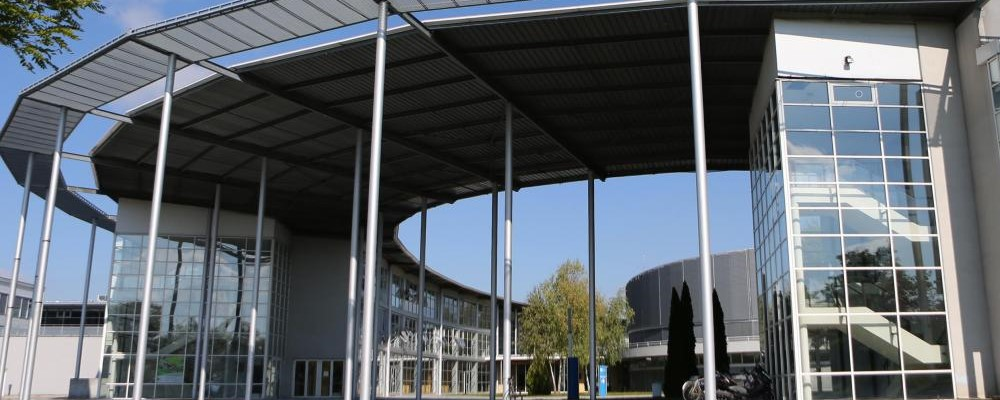
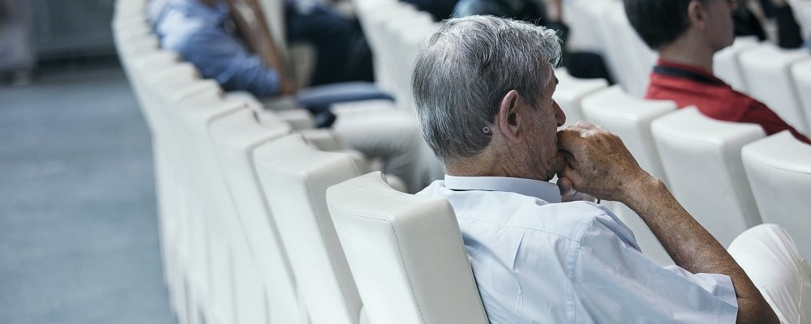

-
Doctorate (PhD)
I started my PhD about security and availability of embedded systems with Vigilock which funded my research. This PhD was in partnership with Charles Delaunay Institut at the University of Technology of Troyes, under the supervision of Rémi Cogranne, Yves Langeron and Patrick Lallement.
The aim of this PhD is to offer some tools for embedded systems makers to improve availability while compromising with security level without increasing vulnerability beyond a chosen threshold.
-

Master and Engineer Degrees
Before my PhD, I had the opportunity to pass a double degree. The first one is an engineer degree (master level) on Systems, Networks and Telecommunications with a specialization on Embedded Systems, and the second one is a Master on Security of Information Systems, both at the University of Technology of Troyes. I overload my courses with two minors : law and economics, especially concerning entrepreuneurship.
My good work and investment at the UTT was recognized when I received the Ellipse Prize during my graduation ceremony in 2015. This prize distinguishes a remarkable academic career associated with a particularly active associative, sportive, international and entrepreneurial commitment.
-
Teaching
As a teacher assistant, I give courses in cryptography and arithmetics for master students at the University of Technology of Troyes.
Beside this activity, I give formations in web development in my company and associations.
-

Publications
I took part in the ESREL 2018 conference in Trondheim, Norway, to talk about the dilemma between security and availability for autonomous microncoller based embedded devices. From this conference, I published the paper Security and availability on embedded systems.
With my fellow PhD student in law, Cédric Bernard, we worked on transdisciplinary fields regarding the synchronization of law and technology, especially around security. We presented our work in a pluridisciplinary event in Lyon.
-
Vulgarization
I took part on many vulgarization events to talk about linguistics and cultures following the many travels I've done among different environments (Ukraine, Norway, Argentina, USA, China...). Before that, I tried myself on FameLab for tech vulgarization about neural processors.
More recently, I participated with Lou Grimal to a Pint of Science event at Lille to talk about endangered languages.